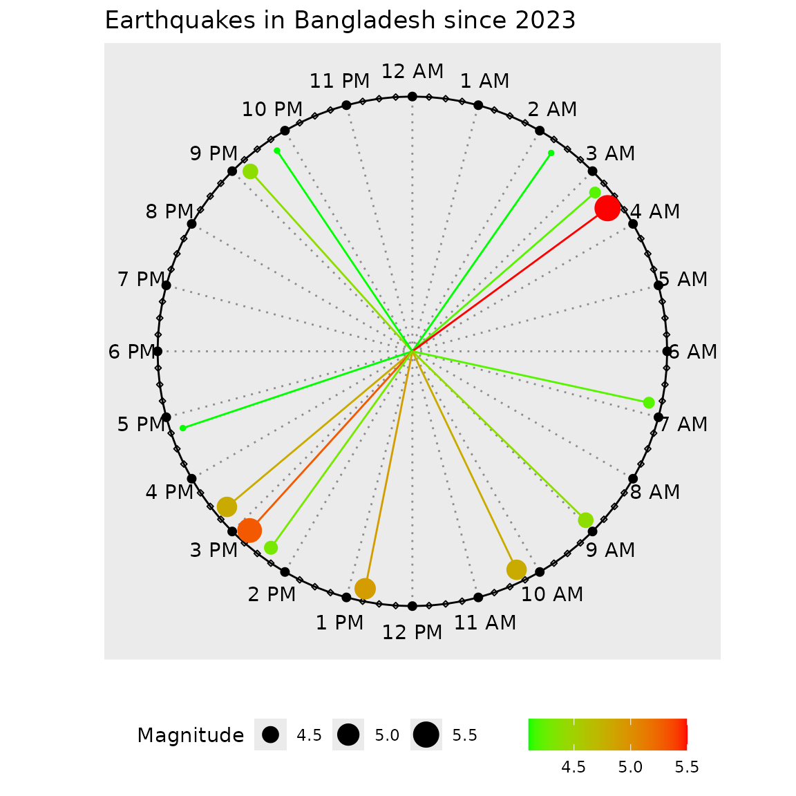
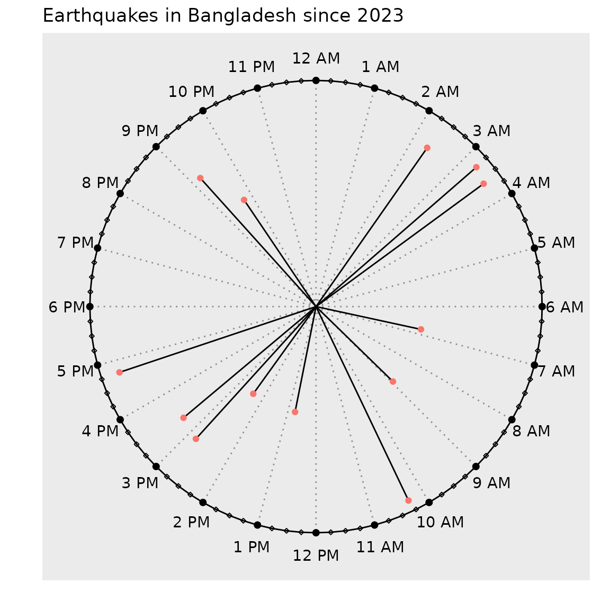

clockplot
clockplot.RmdThe package clockplot is used to generate clock charts
showing event times on a 24-hour clock. Additionally it helps you make a
day chart, week chart, or month chart, or plan events in those
periods.
⚠ The plots shown here may not produce the expected output due to the behavior of Rmarkdown. To see the actual appearance, visit this link or run the codes given.
Types of Charts
The clockpolot offers three types of plot
- Clock charts
- Cyclic Charts
- Period planner
The first type shows event times on a 24 hour clock. The times can be
arbitrary in the formats HH:MM:SS, HH:MM or
even H:M (such as9:3`) and not necessarily specific hours
at all.
The second type allows you to show values during a certain duration
(day, week, month, and year). There is a generic function
cyclic_chart() for arbitrary period, while there charts
specially made for specific period (day, week, year etc.)
Finally, the third one can help you make a plan in a certain period (day, week, month, and year), presenting tasks against period.
Clock Charts
The examples use built-in data sets. The allowed time formats for
these family of charts are HH:MM:SS, HH:MM or
even H:M (such as 12;30:09 or
9:3).
Basic Clock Chart
This is the simplest clock chart; the hands are neither colored nor length modified by a criteria.
We are going to use the smsclock data set. Let us have a
look on it.
head(smsclock)
#> # A tibble: 6 × 7
#> Date day time sender invoked type Title
#> <chr> <chr> <chr> <chr> <chr> <chr> <chr>
#> 1 01-09-2024 Sunday 14:29:00 Airtel No offer AirtelTune
#> 2 01-09-2024 Sunday 20:28:00 Airtel No offer AirtelTune
#> 3 02-09-2024 Monday 10:43:00 Airtel No offer AirtelTune
#> 4 03-09-2024 Tuesday 13:15:00 Airtel No offer AirtelTune
#> 5 04-09-2024 Wednesday 12:24:00 Airtel No offer AirtelTune
#> 6 04-09-2024 Wednesday 17:45:00 Airtel No offer AirtelTuneThe necessary code to produce a chart is just this:
clock_chart(smsclock, time, Col = "green")The code produces a ggplot2 object, so we can add
(+) add extra components to make it more informative.
p1 <- clock_chart(smsclock, time, Col = "green")
p1 + ggplot2::labs(title = "SMS Receiving Times")
Colored Clock Chart
In the previous chart, we colored the hands by an arbitrary color. We
may want to color it by a numeric variable.
clock_chart_col() exactly does this.
We may use bdquake data set for this.
head(bdquake)
#> latitude longitude depth mag hms
#> 1 24.3726 92.6936 35.000 4.4 21:12:27
#> 2 25.7318 91.0047 41.021 4.1 02:20:09
#> 3 21.9812 92.6510 44.892 4.1 16:46:37
#> 4 25.7414 90.2866 10.000 4.4 08:57:52
#> 5 25.2901 91.7860 46.386 4.2 03:16:57
#> 6 23.1475 90.9317 45.057 5.5 03:35:33The code without added components.
clock_chart_col(bdquake, time = hms, crit = mag)Let us modify it.
p <- clock_chart_col(bdquake, time = hms, crit = mag)
p + ggplot2::labs(size = "Magnitude", title = "Earthquakes in Bangladesh since 2023")
It would be great if we could modify the length of the hands as well. We see that in the next chart.
Chart with Modified and Colored Hands
We now use clock_chart_qnt(). We color the chart
magnitude and change length by the depth of the earthquake
hypocenter.
clock_chart_qnt(data = bdquake, time = hms, len = depth,
Col = mag, high = "red", low = "blue")The high and low color names can be vice
versa or other colors, depending on the context. To use a single color
for all lines, use same value for high and
low
The custom plot
p1 <- clock_chart_qnt(data = bdquake, time = hms, len = depth,
Col = mag, high = "red", low = "blue")
p1 + ggplot2::labs(color = "Depth", size = "Magnitude",
title = "Earthquakes in Bangladesh since 2023")If you do not have two variables for len and
Col, use one single variable for both options.
As is evident from the chart, the size of the points represents the magnitude of the earthquakes, while the color and the length of the hands stand for depth of the earthquakes.
The plot shows that the quakes are roughly randomly distributed with respect to time. Most earthquakes occurred between around 1 PM to around 5 PM. Two of the biggest gaps can be seen between 5 PM to 9 PM (a gap amounting to 4 hours) and 10 PM to quarter after 2 AM (almost 4.25 hours).
Modified Length
Although there is another function clock_chart_len() to
modify length of the clock hands, this is rarely useful. Here you can
use a variable to modify the length by and an argument Col
to choose a specific color for the hands.
p1 <- clock_chart_len(data = bdquake, time = hms, crit = depth)
p1 + ggplot2::labs(title = "Earthquakes in Bangladesh since 2023")
Choosing between clock_chart_len() and
clock_chart_qnt()
If we have a column which represents length, distance, or an amount,
or something similar, we may go ahead and use
clock_chart_qnt, otherwise, when the length does not
meaningfully present a variable, we can confine ourselves to
clock_chart_qnt().
Qualitative variable
Here we use the built-in smsclock data set.
head(smsclock, 4)
#> # A tibble: 4 × 7
#> Date day time sender invoked type Title
#> <chr> <chr> <chr> <chr> <chr> <chr> <chr>
#> 1 01-09-2024 Sunday 14:29:00 Airtel No offer AirtelTune
#> 2 01-09-2024 Sunday 20:28:00 Airtel No offer AirtelTune
#> 3 02-09-2024 Monday 10:43:00 Airtel No offer AirtelTune
#> 4 03-09-2024 Tuesday 13:15:00 Airtel No offer AirtelTuneNow let us plot times with respect to message title.
clock_chart_qlt(smsclock, time = time, crit = Title)+
ggplot2::labs(color = "Sender", title = "SMS's Received throughout the Day")This makes it convenient to see which types of messages were sent when. Certain types of messages, such as Supper_Offer, are always sent around the same time. Other messages are spread throughout the day. Between 11 PM and 6 AM, no messages are received.
We can also make use of the facet_wrap() function from
the ggplot2 package.
Instructions from the beginning which args to use in labs.